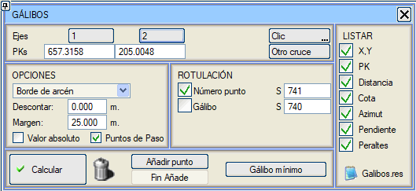
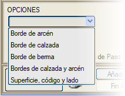
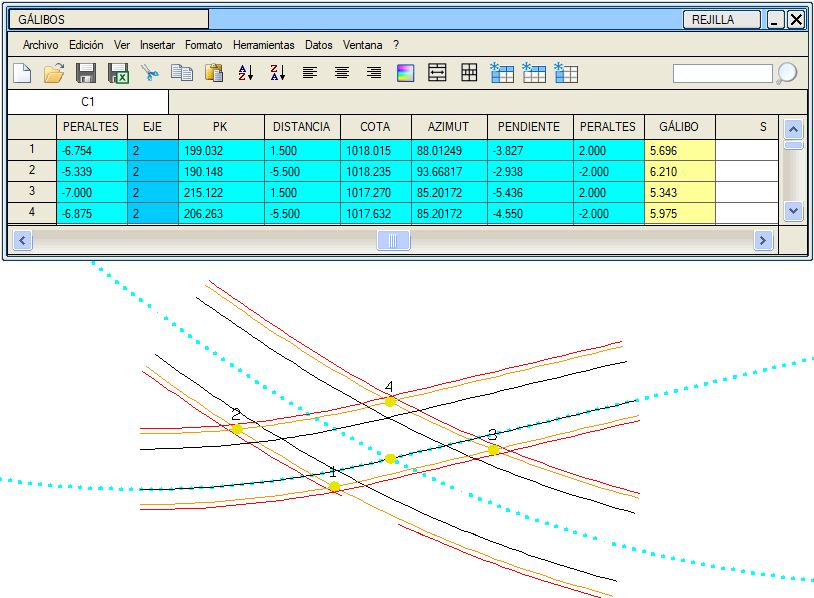

|
|
|
Gabariler
|
Bu pencereden, 2 eksen arasında bir gabari analizi yapılabilir.  İki eksen seçildiğinde, bunların kesişimi hesaplanır ve kesişim noktası etrafındaki bir alanda (±Marj) kaplama ve banket kenarları çizilir. Eğer eksenlerin birden fazla kesişimi varsa, [Diğer Kesişim] komutuyla değiştirilebilir. [Hesapla] komutu, aşağıdaki açılır menüde bulunan seçeneklerden seçilen ile kesişimleri analiz eder:  Yüzey, kod ve tarafa göre seçeneği ile (Gabari çizgilerle gibi) yüzey her zaman 100 koduna kadar 67 ve daha yüksek kodlar için 68 olacaktır. Taraf olarak ise her zaman her ikisi de incelenecektir. Ayrıca, Nokta Ekle düğmesine tıklayarak manuel olarak noktalar eklenebilir. Bu, iki eksenin kesiştiği şev eteklerine/başlarına kadar ulaşmayı sağlar. Sonuçta elde edilen gabari, Mutlak Değer olarak (2 eksenin L67 hatları arasındaki fark) gösterilir. Ayrıca, önceden bir değer girilmişse, sabit bir miktar (Sabit Düşüm kutucuğu) düşülebilir. [Minimum Gabari] seçeneği, minimum gabari değerinin oluştuğu noktayı bulur. Sonuçlar ekranda grafik olarak çizilir, bir veri tablosuna eklenir ve galibos.res raporuna dahil edilir. Bu bilgiler ayrıca bir hesap tablosuna da kaydedilebilir.  Veri tablosunda ve raporlarda gösterilecek parametreler yapılandırılabilir:
Ayrıca, hesaplanan noktaların kilometreleri ve eksene olan mesafeleri ile bir *.pkd dosyası da oluşturulur (res/galibos.pkd). Enkesitler, Özel KM'ler, Dosyalar menüsünde artık, bu kilometrelerde enkesit almak için ilk sütunda kilometreyi içeren *.pkd, *.pkz veya *.pk dosyalarını yüklemeye izin verilir. |